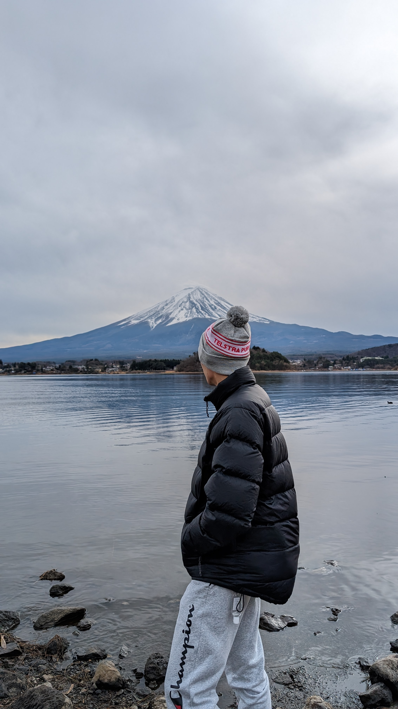

hello, world
This website serves to highlight my publicly available
professional work.
Why the simple design?
- Accessible: Not everyone has high-speed nbn or 5G
internet. You won't find clunky images, videos,
or advertisements here.
- Nostalgic: I wanted to capture the charm of the early
2000s internet, sparking memories
of simpler times that many, myself included, hold dear.
- Refreshing: In contrast to today’s dopamine-driven
websites, the simple design encourages your
brain to slow down, offering an experience that helps reduce
the noise and distractions of the modern
internet.
- The Real Reason: It's easy
to code lol.
whoami
I am a general nerd with a love for video games, anime, and all
things cyber. These days, I mostly focus on
cyber
defence & strategy.

education
- Murdoch University Bachelor of Science in Cyber Security and
Forensics, Computer Science
- North Metropolitan TAFE Certificate III in Screen and
Media
certifications
conferences
List of conferences I've attended:
- AISA PerthSec 2024
- BSides Canberra 2024
- FIRSTCON24 Fukuoka (virtual)
- AISA PerthSec 2023
- BSides Perth 2023
- Cardano Summit Perth 2022
acknowledgements
contact me
I once believed that my technical skills were among my most valuable assets. As I've grown older, I've come to realise that my ability to communicate is far more important.